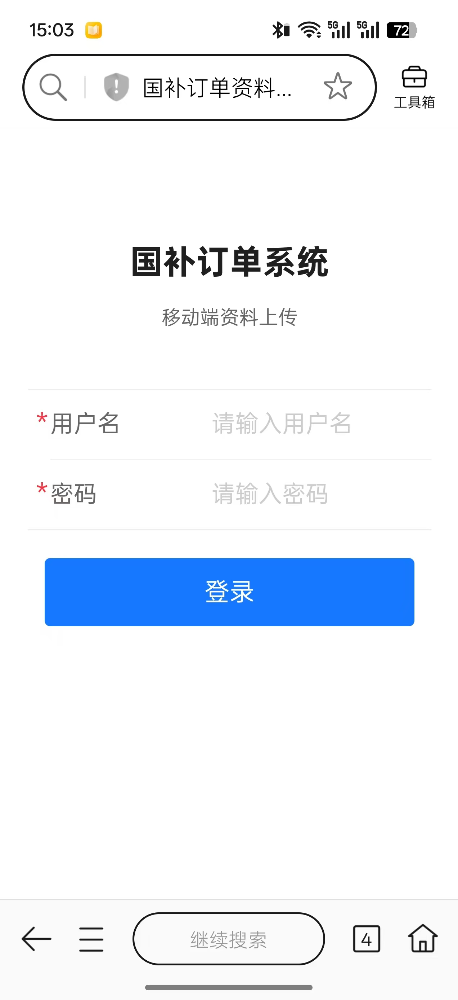
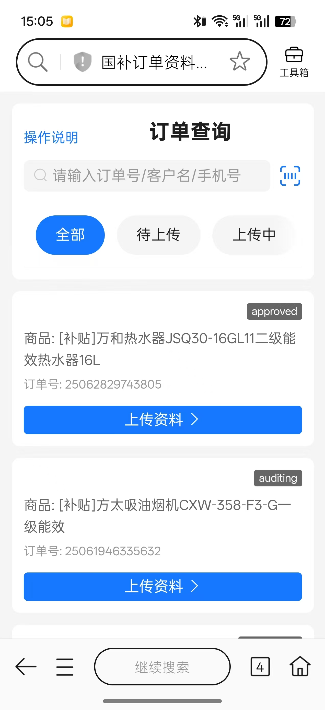
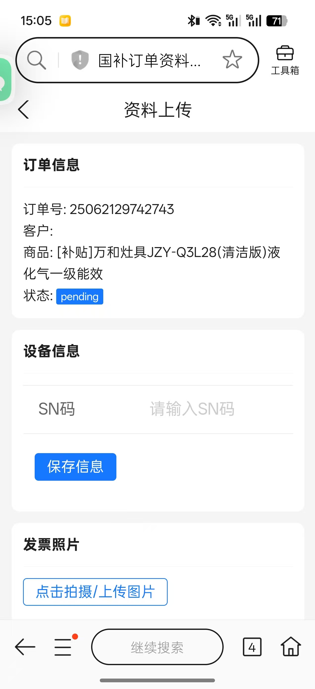
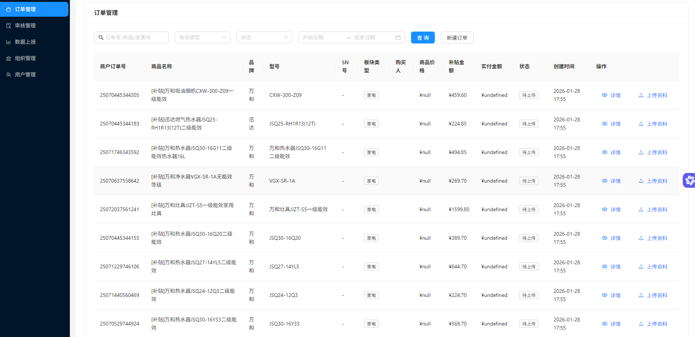
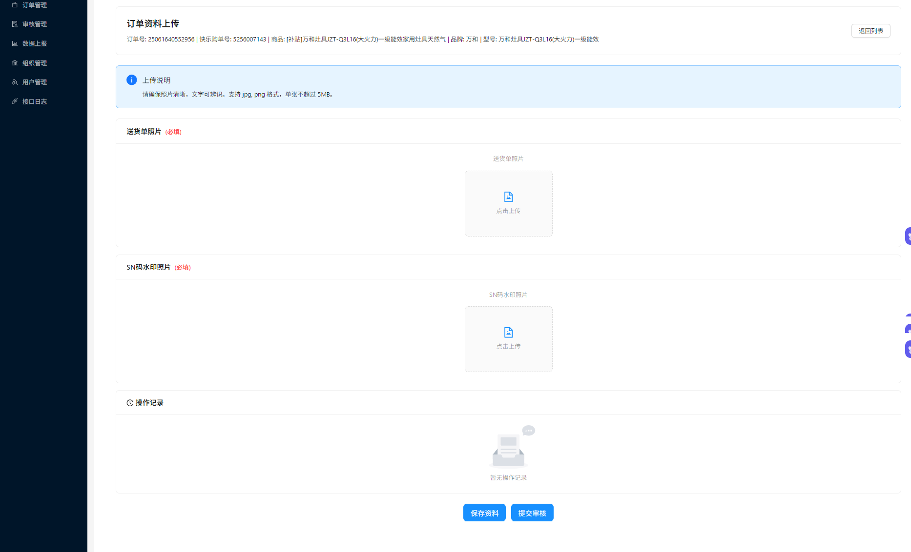

系统分为移动端（现场采集与上传）和电脑端（后台管理与审核）。
使用手机浏览器或微信扫描管理员提供的二维码/链接。

登录成功后进入首页，可通过扫码或手动输入搜索订单。

进入订单后，按品类（家电/3C数码/家装/适老化）上传对应材料，带*为必填。

进入“订单列表”，可按状态快速筛选或输入关键词搜索；支持查看详情与上传资料。

在“审核管理”处理待审核订单，左侧为图片区，右侧为数据区（含OCR识别结果）。

| 状态 | 含义 | 操作建议 |
|---|---|---|
| 待上传 | 初始状态或资料被清空 | 请前往上传资料 |
| 上传中 | 已有部分资料但未提交 | 补全并点击“提交审核” |
| 审核中 | 已提交，等待后台处理 | 资料锁定，耐心等待 |
| 审核驳回 | 审核不通过 | 查看驳回原因后修改并重新提交 |
| 已完成 | 审核通过 | 流程结束 |
图片过大或上传失败？ 系统支持最高 50MB，网络不佳时建议切换 Wi‑Fi 或稍降分辨率。
SN码识别错误？ 可直接在输入框手动纠正，系统自动保存。
找不到“提交审核”？ 请在移动端资料上传页底部；若订单已在“审核中/已完成”则不可提交。
审核被驳回怎么办？ 无需重传全部，删除不合格图或补充缺失后再次提交。